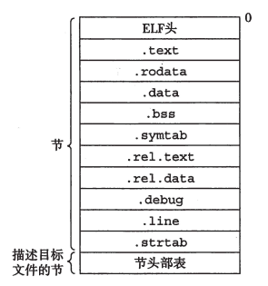
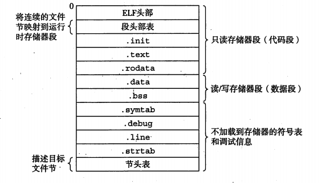
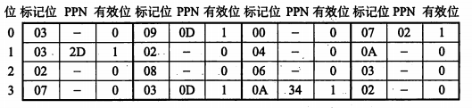
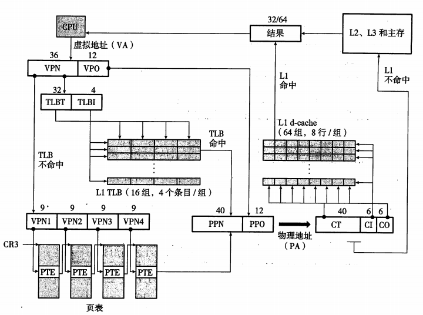

编译
C预处理器cpp 将 .c 翻译成 .i
C编译器cc1 将.i 翻译成汇编 .s
汇编器as 将 .s 翻译成可重定向目标文件 .o
连接器程序 ld 将 .o 结合起来创建可执行文件
连接器的两个任务
- 符号解析 symbol resolution 将每个符号引用和符号定义联系起来
- 重定位 relocation 将符号定义与存储器位置联系起来
目标文件
- 可重定位目标文件
- 可执行目标文件
- 共享目标文件
最早的Unix使用.out，现代Unix使用ELF，Windows NT使用COFF的变种PE。
ELF
一个典型的ELF可重定位目标文件格式。

- ELF头以16字节序列描述生成该文件的系统的字的大小和字节顺序，然后是语法分析和解释（包括ELF头大小、目标文件类型、机器类型、节头部表的文件偏移等。
- .text：已编译的代码
- .rodata：只读数据
- .data：初始化的全局变量
- .bss：未初始化的全局变量
- .symtab：符号表，存放程序中定义和引用的函数和全局变量
- .rel.text：.text中位置的列表
- .rel.data：全局变量的重定位信息
- .debug：调试符号表 -g才会得到
- .line ：行号 -g才会得到
- .strtab：字符串表，包括.symtab和.debug和节头部的名字
static变量是在符号表定义。
重载函数类名为原始名字前加上名字中字符数，比如Foo被编码成3Foo；方法被编码为原始方法加上类名加上每个参数的单字母编码，比如Foo::bar(int, long)被编码为bar__3Fooil。
多重定义：会选择强定义（初始化的定义），不同类型可能导致错误。
重定位
代码的重定位条目放在.rel.text
已初始化数据的重定位条目放在.rel.data
重定位条目格式如下
1 | typedef struct { |
重定位符号引用
1 | refptr = s + r.offset; |
可执行文件
下图是个典型的ELF可执行文件

ELF头部包含程序的入口（entry point)，.init定义了初始化函数，不再需要.rel。
静态库
静态库（.o）是所有相关的目标打包称为独立的文件。
优点：不需要重复定义、只拷贝被引用的模块、只需要较少的库文件名
AR工具创建库
动态链接共享库
.so（Unix）或者.dll（Windows）
解决静态库需要显式链接、浪费资源的问题
gcc -shared -fPIC 创建库
PIC是位置无关代码 position-independent code，通过全局偏移量表实现，但是有性能缺陷。
因而ELF有延迟绑定lazy binding技术，通过GOT和PLT。
GOT[1] 是连接器标识信息，GOT[2] 是连接器入口点
调用时控制传递到PLT中，然后通过GOT做间接跳转。第一次调用时，GOT跳转回PLT下一条指令，通过将标识信息压入栈中并跳转动态链接器，覆盖GOT跳转地址。以后调用时，只是间接引用而没有额外开销。
应用程序还可能在运行时要求链接共享库而无需在编译时链接。（dlopen、dlsym、dlclose）
异常控制流（Exception Control Flow）
异常处理是在内核模式（kernel mode）
每个异常有一个异常号。异常可分为四类
- 中断 interrupt：来自I/O设备，异步
- 陷阱 trap：有意的异常，提供系统调用接口，比如system call
- 故障 fault
- 终止 abort
进程
一个执行中的程序的实例
- 独立的逻辑控制流
- 私有的地址空间
内核为每个进程维持一个上下文context，内核通过上下文切换context switch来实现多任务。在进程执行的某些时刻，内核可以通过调度器进行调度schedule，选择一个新的进程运行。
获取ID getpid（进程PID） getppid（父进程PID）
fork在新的子进程中运行相同程序，而execve函数在当前进程上下文加载并运行新程序，会覆盖当前进程的地址，仍然有相同的PID。Unix和Web服务器大量使用fork和execve。
回收子进程
终止而未被回收的称为僵死进程zombie，它们仍然消耗系统资源。
- 判定等待集合成员 pid
- 修改默认行为 WNOHANG 和 WUNTRACED
- waitpid函数
- 检查已回收子进程的退出状态 WIFEXITED等 见wait.h
- 错误条件：没有子进程 waitpid=-1 ECHILD/被信号中断 返回-1 EINTR
信号
Unix信号允许进程中断其他进程。
一个发送而没被接受的信号为待处理信号pending signal。一个类型至多只有一个待处理信号，多余的会简单丢弃。一个待处理信号只能被接受一次。
发送信号的机制基于进程组。一个负的PID会导致信号被发送到进程组PID中的每个进程。
可以通过signal函数修改接收到信号的默认行为。
几个信号处理中的问题
- 信号会阻塞和不会排队等待：改成while尽可能多的接收信号
- 系统调用被中断的可能性：while手动重启
Signal是sigaction的一个包装函数，提供了可移植的信号处理。
sigprocmask显式改变阻塞信号集合。
同步流以避免并发问题。这个问题称之为竞争race，通过阻塞信号来就解决。暴露竞争的问题的方法就是随机决定父进程和子进程执行的顺序。
非本地跳转
用户级异常控制流，直接从一个函数跳转另一个函数。
setjmp和longjump（catch相当于setjmp，throw相当于longjump
虚拟存储器VM
虚拟寻址时，CPU生成虚拟地址来访问主存。

这里DRAM缓存是全相连的。
页面调度
虚拟存储器作为存储器管理工具
- 简化链接
- 简化加载
- 简化共享
- 简化存储器分配
同时能通过读写权限控制保护存储器。
地址翻译
符号定义
- N 虚拟空间地址数 M 物理空间地址数 P 页大小
- VPO 虚拟页面偏移 VPN 虚拟页号
- TLBI TLB索引 TLBT TLB标记
- PPO 物理页面偏移 PPN 物理页号
- CO 缓冲块偏移
- CI 高速缓存索引 CT 高速缓存标记
地址翻译：虚拟地址空间VAS到物理地址空间PAS的映射

MMU利用VPN选择适当的PTE，得到PPN，PPO和VPO是相同的。
利用TLB加速地址翻译：TLB是个小的虚拟寻址的缓存，每行保存一个PTE块。VPN的t个低位组成TLB索引，其余n-p-t位是TLB标记。
每次MMU从TLB取出相应PTE，如果TLB不命中，则从L1缓存取出PTE并存放在TLB。

多级页表：减小主存压力，地址翻译也并不比单级页表慢很多。
Core i7地址翻译概况如下

优化地址翻译：CPU翻译时，发送VPN到MMU，发送VPO到L1，同时进行。
存储器映射
存储器映射是将虚拟存储器区域和一个磁盘上的对象关联起来。这个对象可以是普通文件，也可以是匿名文件。一旦一个虚拟页面被初始化了，就在一个专门的交换文件（也叫做交换空间或交换区域）之间转换。
一个对象可以被映射到虚拟存储器的一个区域，要么作为共享对象，要么作为私有对象。共享对象即使被映射到了多个共享区域，也只需存放它的一个拷贝。私有对象使用写时拷贝copy-on-write的技术充分使用了稀有的物理存储器。
动态存储器分配
低级的mmap和munmap可以创建和删除虚拟存储器的区域。
动态存储器分配dynamic memory allocater更方便且更好移植。它维护一个进程的虚拟存储器区域，称为堆heap。每个进程维护一个brk，指向堆的顶部。
显式分配
malloc和free（C++里的new和delete）
想要已初始化的动态存储calloc，改变已分配块大小realloc
sbrk通过移动brk指针来改变堆
隐式分配
也叫垃圾收集器，自动释放未使用的已分配块，见JAVA等高级语言。
分配器的目标
最大化吞吐率
最大化利用率
利用率低是因为碎片fragmentation
- 内部碎片：已分配块比有效载荷大（对齐约束）
- 外部碎片：组织/放置/分割/合并 空闲块（空闲链表）
隐式空闲链表
因为双字的对齐约束，块大小总是8的倍数，块大小最低三位总是0，所以只需存储块大小的29个高位，剩余3位编码其他信息。1表示已分配，0表示空闲。

优点是简单，缺点是开销与块总数呈线性关系。
放置策略：首次适配、下次适配（对首次适配的改进）、最佳适配
合并策略：立即合并（会产生抖动？）、推迟合并
Knuth提出边界标记（boundary tag），通过在块结尾处添加脚部（头部的副本），允许常数时间内对前面块进行合并。
显式空闲链表
加入pred和succ的指针，使得开销与空闲块总数呈线性关系
缺点是空闲块必须足够大，潜在提高了内部碎片程度
分离的空闲链表
维护多个空闲链表，每个表中块大小大致相等
- 简单分离存储：快速但是容易造成碎片
- 分离适配：GNU malloc就是这种方法
- 伙伴系统：特殊的分离适配，都是2的幂次；块地址和伙伴地址只有一位不同、主要缺点是要求块大小为2的幂次，导致显著的内部碎片。
垃圾收集
C和C++保守的垃圾收集器：每个可达的都被正确标记了，但一些不可达的也被错误标记为可达了（因为int或float可以伪装成指针，而收集器无法判断）
Mark&Sweep：由于C的保守，需要维护一个已分配块的平衡二叉树
常见存储器错误
- 间接引用坏指针：错误的把int或float当做指针
- 读未初始化的存储器：堆存储器不总是初始化为零，正确方法是用calloc代替malloc或者显式初始化
- 缓冲区溢出
- 假设指针和对象相同大小
- 引用不存在的变量/空闲堆栈
- 存储器泄露（不释放空间）